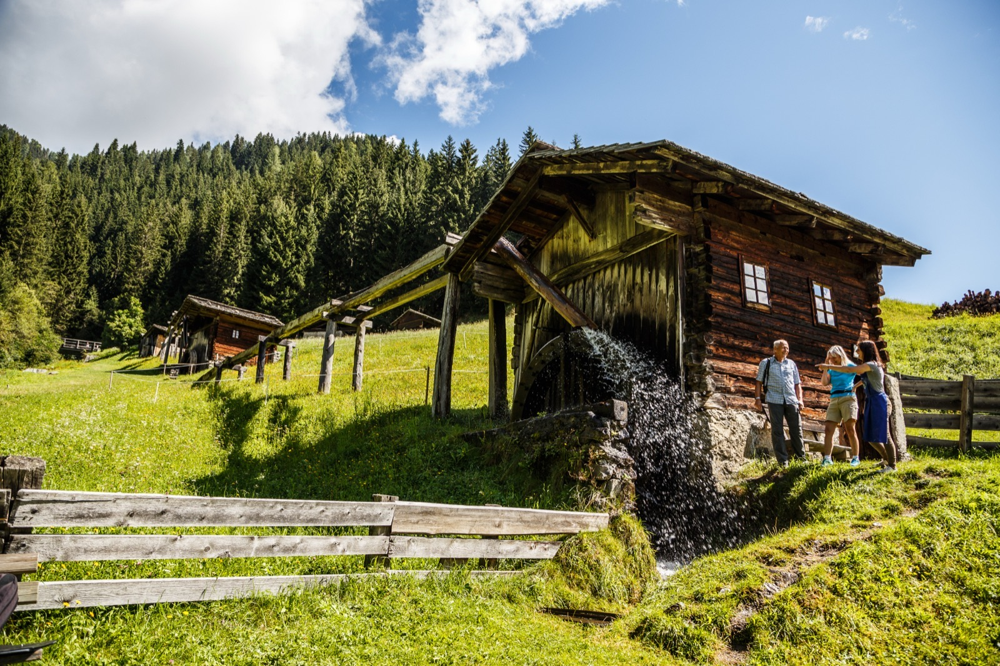
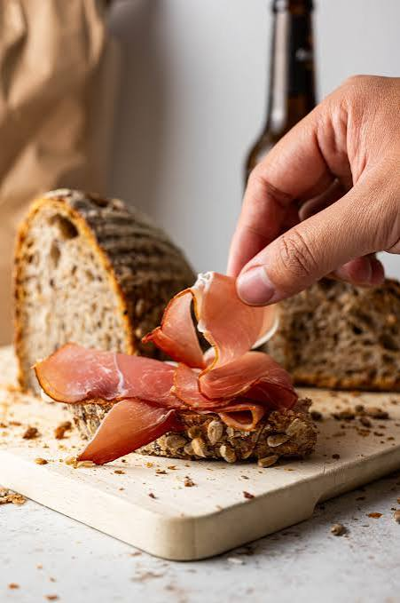

Manche Wege geht man nicht allein. Die Lesachtal-Woche mache ich gemeinsam mit Iris Kurzweil, Bergwanderführerin und Partnerin für dieses Projekt.
Das Lesachtal galt jahrhundertelang als eines der letzten Selbstversorgertäler Europas, bis heute ist es naturbelassen. Fünf Tage lang wandern wir zu Almen, Mühlen und Gipfeln. Du mahlst selbst Mehl in einer der letzten alten Wassermühlen, lernst, was direkt am Wegrand wächst und wie es traditionell verwendet wird, und ein Imker zeigt dir, wie aus dem Bienenstock weit mehr als Honig entsteht: Propolis, Salben und Lippenbalsam. Am Ende backen wir gemeinsam mit einer Einheimischen Brot, nach Lesachtaler Tradition, immaterielles UNESCO-Kulturerbe, serviert noch am selben Abend.
Für dich heißt das: Natur, Bewegung und echte Genusskultur statt durchgetaktetem Programm. Kleine Gruppe, maximal 12 Personen, zwei zertifizierte Bergwanderführer:innen an deiner Seite.


Im Überblick
- 11. bis 15. Oktober, 5 Tage / 4 Nächte
- Basecamp: Alpenhotel Wanderniki, Obergail
- Leitung: Iris Kurzweil und ich
- ab 960 Euro pro Person
Raus aus dem Alltag. Rein ins Lesachtal.
Jetzt Platz sichern